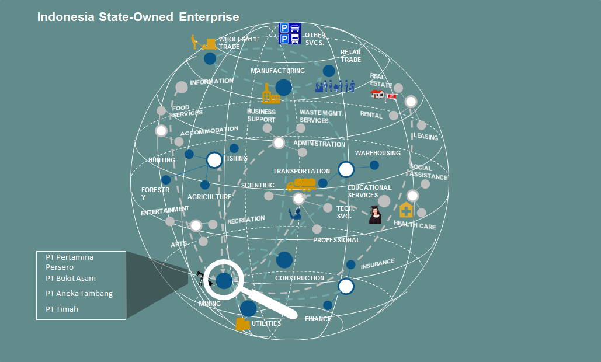

Market Segments
In 2010, we assisted the CEO of Upstream NOC (PERTAMINA) to develop organization matrix map to align operation indicators of 7 subsidiaries to overall Upstream strategy and enable CEO to find root cause of problem of any under performance in operation. Now we plan to revisit and offer a more comprehensive assistance
